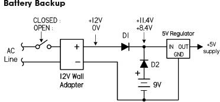
Devices are powered by a wall adapter with battery backup, typically diode-OR for the battery and wall-adapter connections, as shown in Fig. 4.24. Normally if the switch is closed, power is delivered to the load from the 12-V wall adapter through D1; D2 is reverse-biased (off), since its negative end is 2.4V more positive than its positive end. If power is interrupted (switch opened), D1 stops conducting, and the battery kicks in, sending current through D2 into the load; D1 blocks current from flowing back into the wall adapter. There is a penalty for using diodes for battery backup, however, since the diode in series with the battery limits the minimum voltage at which the battery can supply power (around a 0.6-V drop for silicon p-n junction, 0.4 V for Schottky). Better battery-backup designs implement transistors or special ICs that contain an internal comparator which switches over battery power through a low-resistance transistor without the 0.6-V penalty. Check out MAXIM’s website for some example ICs.
FIGURE 4.24
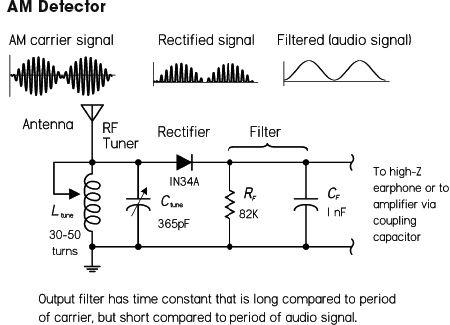
Diodes are often used in the detection of amplitude modulated (AM) signals, as demonstrated in the simple AM radio in Fig. 4.25. Within an AM radio signal, an RF carrier signal of constant high frequency (550 to 1700 kHz) has been amplitude modulated with an audio signal (10 to 20,000 Hz). The audio information is located in duplicate in both upper and lower sidebands, or the envelope of the AM signal. Here, an antenna and LC-tuning circuit act to “resonate” in on the specific carrier frequency of interest (transform radio signal into corresponding electrical signal). A signal diode (e.g., 1N34) is then used to rectify out the negative portion of the incoming signal so it can be manipulated by the next dc stages. The rectified signal is then stripped of its high-frequency carrier by passing through a low-pass filter. The output signal is the audio signal. This signal can be used to drive a simple crystal earpiece, a modern sensitive headphone, or a telephone receiver earpiece. (Low-impedance earphones or speakers will require additional amplification via a coupling capacitor of 1 μF or so.)
FIGURE 4.25
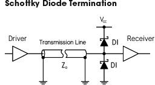
Schottky diode termination can be used to counteract the high-speed transmission line effects, which cause over/undershoots from signal reflections, reduce noise margins, and destroy timing. These types of distortions can cause false triggering in clock lines and erroneous data on address, data, and control lines, as well as contribute significantly to clock and signal jitter. For applications where transmission line impedance is variable or unknown, it’s not possible to specify a termination resistance value—an alternative is needed. The Schottky diode termination has the ability to maintain signal integrity, save significant power, and permit flexible system design. A Schottky diode termination consists of a diode series combination, where one diode clamps to VCC, or supply voltage, and the other to ground. The diodes at the end of the transmission line minimize the effect of reflection via a clamping operation. The top diode clamps voltages that exceed VCC by the forward-bias threshold limit. This clamping will minimize overshoots caused by reflections. For falling edge signals, a clamp diode to ground affects a similar termination. This clamping function does not depend on matching the transmission line characteristic impedance, making it useful in situations where the line impedance is unknown or variable.
FIGURE 4.26
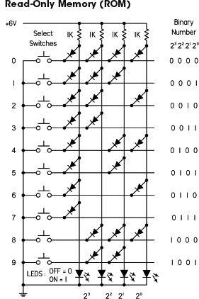
This circuit is a simple read-only memory (ROM) made with diodes. Here, the ROM acts as a decimal-to-binary encoder. With no buttons pressed, all LEDs are lit. If 1 is pressed, current from the supply is diverted away from the 23, 22, and 21 lines via the diodes to ground, but is allowed to pass on the 20 line, thus presenting 0001 on the LED readout. In reality, using a PROM such as this for encoding—or anything else, for that matter—isn’t practical. Usually there is a special encoder IC you buy or you simply take care of the encoding—say, with a multiplexed keypad that’s interfaced with a microcontroller—the actual encoding is taken care of at the programming level. At any rate, it’s a fun circuit, and this gives you a basic idea of how read-only memory works.
FIGURE 4.27
4.2.6 Zener Diodes
A zener diode acts like a two-way gate to current flow. In the forward direction, it’s easy to push open; only about 0.6 V—just like a standard diode. In the reverse direction, it’s harder to push open; it requires a voltage equal to the zener’s breakdown voltage VZ. This breakdown voltage can be anywhere between 1.8 and 200 V, depending on the model (1N5225B = 3.0 V, 1N4733A = 5.1 V, 1N4739A = 9.1 V, etc.). Power ratings vary from around 0.25 to 50 W.
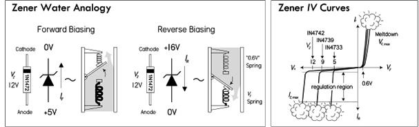
FIGURE 4.28 The reverse-bias direction is the standard configuration used in most applications, along with a series resistor. In this configuration, the zener diode acts like a pressure release value, passing as much current as necessary to keep the voltage across it constant, equal to VZ. In other words, it can act as a voltage regulator. See application in Fig. 4.29.
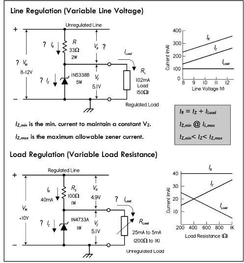
FIGURE 4.29 Line regulation example: If the line voltage increases, it will cause an increase in line current. Since the load voltage is constant (maintained by the zener), the increase in line current will result in an increase in zener current, thus maintaining a constant load current. If the line voltage decreases, less line current results, and less current is passed by the zener. See graph in Fig. 4.29, top right.
Load regulation example: If the load voltage attempts to decrease as a result of decreased load resistance (increased load current), the increase in load current is offset by the decrease in zener current. The voltage across the load will remain fairly constant. If the load voltage attempts to increase due to an increase in load resistance (decrease in load current), the decrease in load current is offset by an increase in zener current. See graph in Fig. 4.29, bottom right.
The following formulas can be used when selecting the component values:
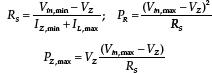
See Problem 3 at end of this section for a design example.
Note that zener regulators are somewhat temperature dependent and aren’t the best choice for critical applications. A linear regulator IC, though more expensive, is less dependent on temperature variations due to an internal error amplifier. They do typically use an internal zener to supply the reference, nonetheless.
These circuits act as voltage regulators, preventing any supply voltage or load current variations from pulling down the voltage supplied to the load. The following explains how the zener diode compensates for both line and load variations.
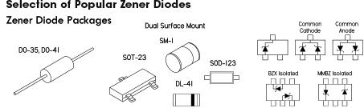
TABLE 4.2
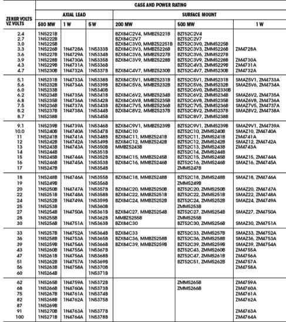
4.2.7 Zener Diode Applications
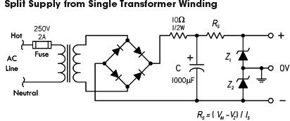
Here’s a method for obtaining a split supply from a non-center-tapped transformer using two zener diodes. Z1 and Z2 are selected of equal voltage and power rating for desired split voltage and load. As with the previous example, the temperature dependency of the zener diodes makes this arrangement less accurate than a supply that uses two separate regulator ICs. However, it’s a simple alternative for noncritical applications. See Chap. 11 on power supplies.
FIGURE 4.31
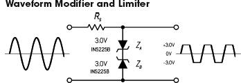
Two opposing zener diodes act to clip both halves of an input signal. Here a sine wave is converted to a near squarewave. Besides acting to reshape a waveform, this arrangement can also be placed across the output terminal of a dc power supply to prevent unwanted voltage transients from reaching an attached load. The breakdown voltages in that case must be greater than the supply voltage, but smaller than the maximum allowable transient voltage. A single bidirectional TVS does the same thing—see the section on transient suppressors.
FIGURE 4.32
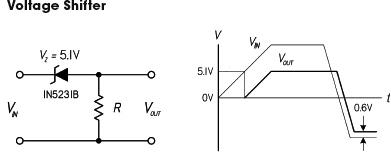
This circuit shifts the input voltage down by an amount equal to the breakdown voltage of the zener diode. As the input goes positive, the zener doesn’t go into breakdown until it reaches 5.1 V (for the 1N5281B). After that, the output follows the input, but shifted 5.1 V below it. When the input goes negative, the output will follow the input, but shifted by 0.6 V—the forward threshold voltage drop of the zener.
FIGURE 4.33
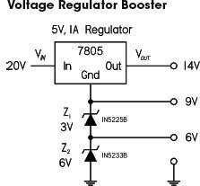
Zener diodes can be used to raise the level of a voltage regulator and obtain different regulated voltage outputs. Here 3-V and 6-V zener diodes are placed in series to push the reference ground of a 5 V regulator IC up 9 V to a total of 14 V. Note that in real designs, capacitors may be required at the input and output. See the section on voltage regulator ICs.
FIGURE 4.34
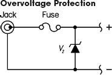
If excessive voltage is applied to the jack (say, via an incorrectly rated wall plug-in supply), the zener diode will conduct until the fuse is blown. The breakdown voltage of the zener should be slightly above the maximum tolerable voltage that the load can handle. Either a fast- or a slow-blow fuse can be used, depending on the sensitivity of the load. The current and voltage ratings of the fuse must be selected according to the expected limits of the application. Note that there are other, similar overvoltage protection designs that use special devices, such as TVSs and varistors. These devices are cheap and are very popular in design today.
FIGURE 4.35
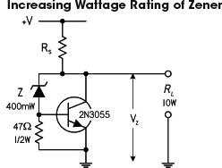
Here’s a simple circuit that effectively increases the wattage rating (current-handling capacity) of a zener diode by letting a power transistor take care of the majority of the regulating current. The zener itself takes a small portion of the total current and creates a base voltage/current (with the help of the base-to-ground resistor) that changes the collector-to-emitter current flow according to any variations in line or load current.
FIGURE 4.36
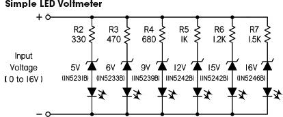
Here’s a simple circuit voltmeter that uses the sequence of zener diodes with increasing breakdown voltages. LEDs glow in sequence as the input voltage rises. It’s okay to use different zener diodes so long as the series resistors limit current through LED to a safe level. Most LEDs are happiest around 20 mA or so. You can calculate the worst-case scenario to be at the 5 V LED leg when Vin = 16 V. If you’re looking for more sophistication, you can always use an analog-to-digital converter, along with a microcontroller and LCD or LED display.
FIGURE 4.37
4.2.8 Varactor Diodes (Variable Capacitance Diodes)
A varactor or variable capacitance diode (also called a varicap) is a diode whose junction capacitance can be altered with an applied reverse voltage. In this way, it acts as a variable capacitor. As the applied reverse voltage increases, the width of its junction increases, which decreases its capacitance. The typical capacitance range for varactors ranges from a few picofarads to over 100 pF, with a maximum reverse voltage range from a few volts to close to a hundred volts, depending on device. (Many standard diodes and zener diodes can be used as inexpensive varactor diodes, though the relationship between reverse voltage and capacitance isn’t always as reliable.)
The low capacitance levels provided by a varactor usually limit its use to high-frequency RF circuits, where the applied voltage is used to change the capacitance of an oscillator circuit. The reverse voltage may be applied via a tuning potentiometer, which acts to change the overall frequency of an oscillator, or it may be applied by a modulating signal (e.g., audio signal), which acts to FM-modulate the oscillator’s high-frequency carrier. See the examples that follow.
When designing with varactor diodes, the reverse-bias voltage must be absolutely free of noise, since any variation in the bias voltage will cause changes in capacitance. Unwanted frequency shifts or instability will result if the reverse-bias voltage is noisy. Filter capacitors are used to limit such noise.
Varactors come in both single and dual forms. The dual varactor configuration contains two varactors in series-opposing, with common anodes and separate cathodes. In this configuration, the varactors acts as series capacitors that change capacitance levels together when a voltage is applied to the common anode lead. See Fig. 4.39.
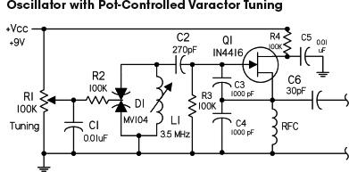
Unlike the preceding circuit, this circuit acts simply as a variable high-frequency oscillator, whose frequency is varied via a potentiometer (R1). The voltage from the pot is applied to a dual varactor diode D1 through a low-frequency filter (C1, R2) to ensure that the varactor bias is clean dc. This alters the effective capacitance of the D1-L1 tuned circuit, which changes the frequency of the entire oscillator. C2 and C6 are dc-blocking (ac-coupling) capacitors. Q1 is an N-channel JFET in common drain configuration with feedback to the gate through C3. R3 is the gate bias resistor. R4 is the drain voltage resistor with filter capacitor CF.
FIGURE 4.39
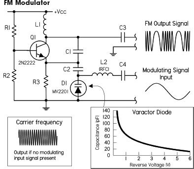
FM modulation: FM (frequency modulation) is produced when the frequency of a carrier is changed instantaneously according to the magnitude of an applied modulating signal. (The frequency of the carrier is usually in the megahertz, while the modulating signal is typically in the hertz to kilohertz range, e.g., audio modulating radio signal.) One way to produce FM is to use a voltage-controlled oscillator. The oscillator will have an output frequency proportional to the modulating signal’s amplitude. As the amplitude of the modulating signal increases, the frequency of the carrier increases. Here a Colpitts LC oscillator uses a varactor diode in place of one of its regulator capacitors that form the tuned circuit. The modulating voltage is applied across the diode and changes the diode’s capacitance in proportion. This causes the oscillator frequency to change, thus generating FM in the process. L2 (RFC) is a radiofrequency choke that prevents high-frequency signals from feeding backing into the modulating source. C3 and C4 are ac-coupling capacitors. The rest of the components go into making the Colpitts oscillator.
FIGURE 4.38
PIN diodes are used as RF and microwave switches. To high-frequency signals, the PIN diode acts like a variable resistor whose value is controlled by an applied dc forward-bias current. With a high dc forward bias, the resistance is often less than an ohm. But with a small forward bias, the resistance appears very large (kiloohms) to high-frequency signals. PIN diodes are constructed with a layer of intrinsic (undoped) semiconductor placed between very highly doped p-type and n-type material, creating a PIN junction.
In terms of application, PIN diodes are used primarily as RF and microwave switches—even at high power levels. A common application is their use as transmit/receive switches in transceivers operating from 100 MHz and up. They are also used as photodetectors in fiber-optic systems. For the most part, you’ll never need to use them, unless you are a graduate student in electrical engineering or physics, or are working for a high-tech firm.
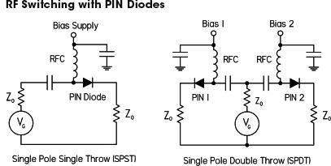
At RF frequencies, switching is very finicky, requiring special design techniques to minimize signal contamination and degradation. Here are two switching circuits that make use of PIN diodes. In the SPST switch circuit, a signal from a RF generator (VG), can be allowed to pass, or can be prevented from passing to the load by applying a bias voltage to the PIN diode. The RFC is a high-frequency choke to prevent RF from entering bias supply, while the capacitor to ground is used to supply clean dc at the bias input. The SPDT switch circuit is similar to the first, but with, of course, two bias inputs.
FIGURE 4.40
4.2.10 Microwave Diodes (IMPATT, Gunn, Tunnel, etc.)
There are a number of diodes that you’ll probably never have to use, but they are around nevertheless. These diodes are used for very special purposes at the high-frequency end—microwave and millimeter wave (>20 GHz) range, often in microwave amplifiers and oscillators. Most standard diodes and bipolar transistors usually won’t cut it at such high speeds, due to the relatively slow diffusion or migration of charge carriers across semiconductor junctions. With the tunnel, Gunn, IMPATT, and other diodes, the variable effects that lead to useful alterations in, say, an amplifier’s gain or an oscillator’s resonant frequency involve entirely different physics—physics that allows for alterations at essentially the speed of light. The physics may be electron tunneling (through electrostatic barrier separating p-type and n-type regions, rather than being thermionically emitted over the barrier, as generally occurs in a diode)—tunnel diode. Or it may be due to a negative resistance at forward biasing because of an increase in effective mass (slowing down) of electrons due to complex conduction band symmetry—Gunn diodes. It may also be a negative resistance resulting in electrons moving to higher, less mobile bands, reducing current flow with applied forward bias—IMPATT diodes. Anyway, you get the idea—it’s hairy high-frequency stuff that should probably be left to the experts. (Note: TRAPATT and Baritt diodes are also used in microwave applications.)
Problem 1: What does this circuit do? What’s the final output voltage? What are the individual voltage drops across each diode with plug tip-positive and plug tip-negative? (Assume each diode has a 0.6 V forward voltage drop.) To prevent diode meltdown, what would be the minimum load resistance, assuming 1N4002 diodes?
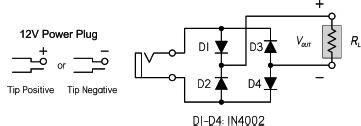
FIGURE 4.41
Answer: Polarity protection circuit that will output the same polarity regardless of the polarity applied to input. The final output voltage is 11.4 V. Tip-positive: VD1 = 0.6 V, VD2 = 11.4 V, VD3 = 11.4 V, VD4 = 0.6 V; Tip-negative: VD1 = 11.4 V, VD2 = 0.6 V, VD3 = 0.6 V, VD4 = 11.4 V. Load resistance should not drop below 11.4 Ω, assuming 1N4002 diodes, since they have a maximum current rating of 1 A. It’s a good idea to keep the current to around 75 percent of the maximum value for safety, so 15 Ω would be a better limit.
Problem 2: What does the output look like for the circuit to the left in Fig. 4.42? What happens if a load of 2.2K is attached to the output?
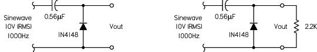
FIGURE 4.42
Answer: Clamp circuit, where the output is shifted so that it’s practically pure alternating dc, for the exception of a 0.6 V negative dip due to the diode drop. This gives a maximum peak of 27.6 V and a minimum of -0.6 V. (Recall Vpeak = 1.41 × Vrms.) With the load attached, the output level decreases slightly—the capacitor/load resistor acts like a high-pass filter, with a cutoff frequency of 1/(2πRC). In simulation, the output goes to 8.90 V(RMS) or 24.5 peak, −0.6 V minimum.
Problem 3: A 10- to 50-mA load requires a regulated 8.2 V. With a 12 V ± 10 percent power supply and 8.2 V zener diode. What series resistance is required? Assume from the data sheets (or experimentation) that the zener diode’s minimum regulation current is 10 mA. Determine the power ratings for the resistor and zener diode.
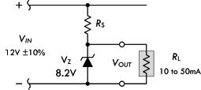
FIGURE 4.43
Answer: Vin,max = 13.2 V, Vin,min = 10.8 V: RS = (10.8 V − 8.2 V)/(10 mA + 50 mA) = 43 Ω; PR = (13.2 V − 8.2 V)2/(43 Ω) = 0.58 W; PZ = 8.2 V(13.2 V − 8.2 V)/(43 Ω) = 0.95 W. See Fig. 4.29 for details.
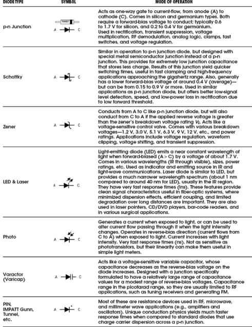
Transistors are semiconductor devices that act as either electrically controlled switches or amplifier controls. The beauty of transistors is the way they can control electric current flow in a manner similar to the way a faucet controls the flow of water. With a faucet, the flow of water is controlled by a control knob. With a transistor, a small voltage and/or current applied to a control lead acts to control a larger electric flow through its other two leads.
Transistors are used in almost every electric circuit you can imagine. For example, you find transistors in switching circuits, amplifier circuits, oscillator circuits, current-source circuits, voltage-regulator circuits, power-supply circuits, digital logic ICs, and almost any circuit that uses small control signals to control larger currents.
4.3.1 Introduction to Transistors
Transistors come in a variety of designs and come with unique control and current-flow features. Most transistors have a variable current-control feature, but a few do not. Some transistors are normally off until a voltage is applied to the base or gate, whereas others are normally on until a voltage is applied. (Here, normally refers to the condition when the control lead is open circuited. Also, on can represent a variable amount of current flow.) Some transistors require both a small current and a small voltage applied to their control lead to function, whereas others only require a voltage. Some transistors require a negative voltage and/or output current at their base lead (relative to one of their other two leads) to function, whereas others require a positive voltage and/or input current at their base.
The two major families of transistors include bipolar transistors and field-effect transistors (FETs). The major difference between these two families is that bipolar transistors require a biasing input (or output) current at their control leads, whereas FETs require only a voltage—practically no current. [Physically speaking, bipolar transistors require both positive (holes) and negative (electrons) carriers to operate, whereas FETs only require one charge carrier.] Because FETs draw little or no current, they have high input impedances (∼1014 Ω). This high input impedance means that the FET’s control lead will not have much influence on the current dynamics within the circuit that controls the FET. With a bipolar transistor, the control lead may draw a small amount of current from the control circuit, which then combines with the main current flowing through its other two leads, thus altering the dynamics of the control circuit.
In reality, FETs are definitely more popular in circuit design today than bipolar transistors. Besides drawing essentially zero input-output current at their control leads, they are easier to manufacture, cheaper to make (require less silicon), and can be made extremely small—making them useful elements in integrated circuits. One drawback with FETs is in amplifier circuits, where their transconductance is much lower than that of bipolar transistors at the same current. This means that the voltage gain will not be as large. For simple amplifier circuits, FETs are seldom used unless extremely high input impedances and low input currents are required.
Table 4.4 provides an overview of some of the most popular transistors. Note that the term normally used in this chart refers to conditions where the control lead (e.g., base, gate) is shorted (is at the same potential) with one of its channel leads (e.g., emitter, source). Also, the terms on and off used in this chart are not to be taken too literally; the amount of current flow through a device is usually a variable quantity, set by the magnitude of the control voltage. The transistors described in this chart will be discussed in greater detail later on in this chapter.
TABLE 4.4 Overview of Transistors
4.3.2 Bipolar Transistors
Bipolar transistors are three-terminal devices that act as electrically controlled switches or as amplifier controls. These devices come in either npn or pnp configurations, as shown in Fig. 4.44. An npn bipolar transistor uses a small input current and positive voltage at its base (relative to its emitter) to control a much larger collector-to-emitter current. Conversely, a pnp transistor uses a small output base current and negative base voltage (relative its emitter) to control a larger emitter-to-collector current.
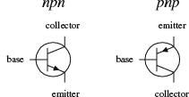
FIGURE 4.44
Bipolar transistors are incredibly useful devices. Their ability to control current flow by means of applied control signals makes them essential elements in electrically controlled switching circuits, current-regulator circuits, voltage-regulator circuits, amplifier circuits, oscillator circuits, and memory circuits.
How Bipolar Transistors Work
Here is a simple model of how an npn bipolar transistor works. (For a pnp bipolar transistor, all ingredients, polarities, and currents are reversed.)
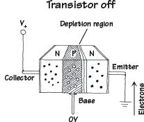
An npn bipolar transistor is made by sandwiching a thin slice of p semiconductor between two n-type semiconductors. When no voltage is applied at the transistor’s base, electrons in the emitter are prevented from passing to the collector side because of the p-n junction. (Remember that for electrons to flow across a p-n junction, a biasing voltage is needed to give the electrons enough energy to “escape” the atomic forces holding them to the n side.) Notice that if a negative voltage is applied to the base, things get even worse—the p-n junction between the base and emitter becomes reverse-biased. As a result, a depletion region forms and prevents current flow.
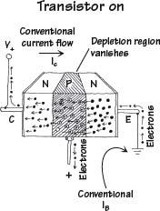
If a positive voltage (of at least 0.6 V) is applied to the base of an npn transistor, the pn junction between the base and emitter is forward-biased. During forward bias, escaping electrons are drawn to the positive base. Some electrons exit through the base, but—this is the trick—because the p-type base is so thin, the onslaught of electrons that leave the emitter get close enough to the collector side that they begin jumping into the collector. Increasing the base voltage increases this jumping effect and hence increases the emitter-to-collector electron flow. Remember that conventional currents are moving in the opposite direction to the electron flow. Thus, in terms of conventional currents, a positive voltage and input current applied at the base cause a “positive” current I to flow from the collector to the emitter.
FIGURE 4.45
Figure 4.46 shows a typical characteristic curve for a bipolar transistor. This characteristic curve describes the effects the base current IB and the emitter-to-collector voltage VEC have on the emitter/collector currents IE and IC. (As you will see in a second, IC is practically equal to IE.)
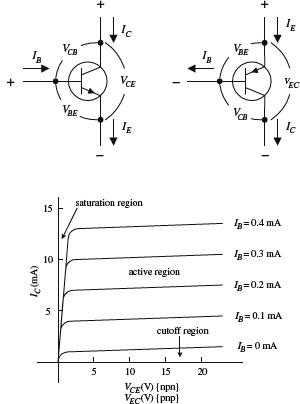
FIGURE 4.46
Some important terms used to describe a transistor’s operation include saturation region, cutoff region, active mode/region, bias, and quiescent point (Q-point). Saturation region refers to a region of operation where maximum collector current flows and the transistor acts much like a closed switch from collector to emitter. Cutoff region refers to the region of operation near the voltage axis of the collector characteristics graph, where the transistor acts like an open switch—only a very small leakage current flows in this mode of operation. Active mode/region describes transistor operation in the region to the right of saturation and above cutoff, where a near-linear relationship exists between terminal currents (IB, IC, IE). Bias refers to the specific dc terminal voltages and current of the transistor to set a desired point of active-mode operation, called the quiescent point, or Q-point.
The Formulas
The fundamental formula used to describe the behavior of a bipolar transistor (at least within the active region) is
IC = hFEIB = βIB
Rule 1 For an npn transistor, the voltage at the collector VC must be greater than the voltage at the emitter VE by at least a few tenths of a volt; otherwise, current will not flow through the collector-emitter junction, no matter what the applied voltage is at the base. For pnp transistors, the emitter voltage must be greater than the collector voltage by a similar amount.
Rule 2 For an npn transistor, there is a voltage drop from the base to the emitter of 0.6 V. For a pnp transistor, there is a 0.6-V rise from base to emitter. In terms of operation, this means that the base voltage VB of an npn transistor must be at least 0.6 V greater than the emitter voltage VE; otherwise, the transistor will pass an collector-to-emitter current. For a pnp transistor, VB must be at least 0.6 V less than VE; otherwise, it will not pass a collector-to-emitter current.
where IB is the base current, IC is the collector current, and hFE (also referred to as β) is the current gain. Every transistor has its own unique hFE. The hFE of a transistor is often taken to be a constant, typically around 10 to 500, but it may change slightly with temperature and with changes in collector-to-emitter voltage. (A transistor’s hFE is given in transistor spec tables.) A simple explanation of what the current-gain formula tells you is this: If you take a bipolar transistor with, say, an hFE of 100 and then feed (npn) or sink (pnp) a 1-mA current into (npn) or out of (pnp) its base, a collector current of 100 mA will result. Now, it is important to note that the current-gain formula applies only if rules 1 and 2 are met, i.e., assuming the transistor is within the active region. Also, there is a limit to how much current can flow through a transistor’s terminals and a limit to the size of voltage that can be applied across them. I will discuss these limits later in the chapter (Fig. 4.47).
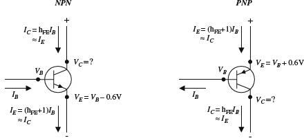
FIGURE 4.47
Now, if you apply the law of conservation of current (follow the arrows in Fig. 4.47), you get the following useful expression relating the emitter, collector, and base currents:
IE = IC + IB
If you combine this equation with the current-gain equation, you can come up with an equation relating the emitter and base currents:
IE = (hFE + 1)IB
As you can see, this equation is almost identical to the current-gain equation (IC = hFEIB), with the exception of the +1 term. In practice, the +1 is insignificant as long as hFE is large (which is almost always the case). This means that you can make the following approximation:
IE ≈ IC
Finally, the second equation below is simply rule 2 expressed in mathematical form:
VBE = VB − VE = + 0.6 V (npn)
VBE = VB − VE = − 0.6 V (pnp)
Figure 4.48 shows how all the terminal currents and voltages are related. In the figure, notice that the collector voltage has a question mark next to it. As it turns out, the value of VC cannot be determined directly by applying the formulas. Instead, VC’s value depends on the network that is connected to it. For example, if you consider the setup shown in Fig. 4.48, you must find the voltage drop across the resistor in order to find the collector voltage. By applying Ohm’s law and using the current-gain relation, you can calculate VC. The results are shown in the figure.
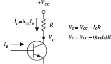
FIGURE 4.48
It is important to note that the equations here are idealistic in form. In reality, these equations may result in “unreal” answers. For instance, they tend to “screw up” when the currents and voltages are not within the bounds provided by the characteristic curves. If you apply the equations blindly, without considering the operating characteristics, you could end up with some wild results that are physically impossible.
One final note with regard to bipolar transistor theory involves what is called transresiststance rtr. Transresistance represents a small resistance that is inherently present within the emitter junction region of a transistor. Two things that determine the transresistance of a transistor are temperature and emitter current flow. The following equation provides a rough approximation of the rtr:
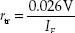
In many cases, rtr is insignificantly small (usually well below 1000 Ω) and does not pose a major threat to the overall operation of a circuit. However, in certain types of circuits, treating rtr as being insignificant will not do. In fact, its presence may be the major factor determining the overall behavior of a circuit. We will take a closer look at transresistance later on in this chapter.
Here are a couple of problems that should help explain how the equations work. The first example deals with an npn transistor; the second deals with a pnp transistor.
EXAMPLE 1 Given VCC = +20 V, VB = 5.6 V, R1 = 4.7 kΩ, R2 = 3.3 kΩ, and hFE = 100, find VE, IE, IB, IC, and VC.
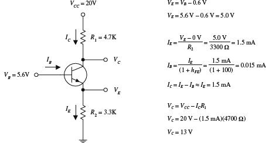
FIGURE 4.49
EXAMPLE 2 Given VCC = + 10 V, VB = 8.2 V, R1 = 560 Ω, R2 = 2.8 kΩ, and hFE = 100, find VE, IE, IB, IC, and VC.
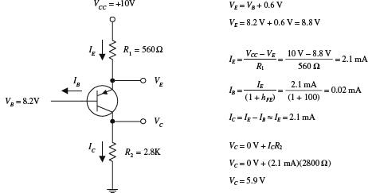
FIGURE 4.50
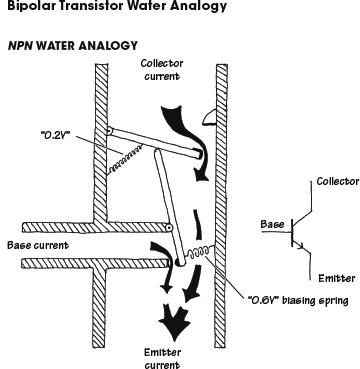
The base of the npn water transistor represents the smaller tube entering the main device from the left side. The collector is represented by the upper portion of the vertical tube, while the emitter is represented by the lower portion of the vertical tube. When no pressure or current is applied through the “base” tube (analogous to an npn transistor’s base being open circuited), the lower lever arm remains vertical while the top of this arm holds the upper main door shut. This state is analogous to a real bipolar npn transistor off state. In the water analogy, when a small current and pressure are applied to the base tube, the vertical lever is pushed by the entering current and swings counterclockwise. When this lever arm swings, the upper main door is permitted to swing open a certain amount that is dependent on the amount of swing of the lever arm. In this state, water can make its way from the collector tube to the emitter tube, provided there is enough pressure to overcome the force of the spring holding the door shut. This spring force is analogous to the 0.6 V biasing voltage needed to allow current through the collector-emitter channel. Notice that in this analogy, the small base water current combines with the collector current.
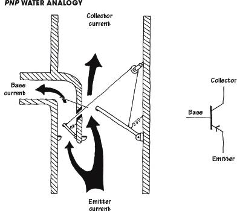
The main feature to note here is the need for a lower pressure at the base for the pnp water transistor to turn on. By allowing current to flow out the base tube, the lever moves, allowing the emitter-collector door to open. The degree of openness varies with the amount of swing in the lever arm, which corresponds to the amount of current escaping through the base tube. Again, note the 0.6 V biasing spring.
FIGURE 4.51
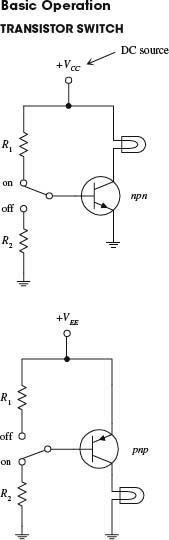
Here, an npn transistor is used to control current flow through a light bulb. When the switch is thrown to the on position, the transistor is properly biased, and the collector-to-emitter channel opens, allowing current to flow from VCC through the light bulb and into ground. The amount of current entering the base is determined by
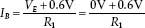
To find the collector current, you can use the current-gain relation (IC = hFEIB), provided that there is not too large a voltage drop across the light bulb (it shouldn’t cause VC to drop below 0.6 V + VE). When the switch is thrown to the off position, the base is set to ground, and the transistor turns off, cutting current flow to the light bulb. R2 should be large (e.g., 10 kΩ) so that very little current flows to ground.
In the pnp circuit, everything is reversed; current must leave the base in order for a collector current to flow.
FIGURE 4.52
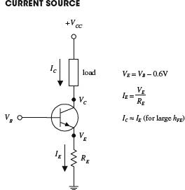
FIGURE 4.53
The circuit here shows how an npn transistor can be used to make a simple current source. By applying a small input voltage and current at the transistor’s base, a larger collector/load current can be controlled. The collector/load current is related to the base voltage by
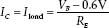
The derivation of this equation is shown with the figure.
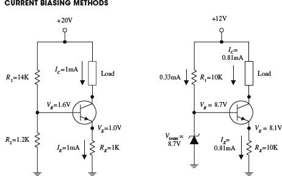
Two common methods for biasing a current source are to use either a voltage-divider circuit (shown in the leftmost circuit) or a zener diode regulator (shown in the right-most circuit). In the voltage-divider circuit, the base voltage is set by R1 and R2 and is equal to
In the zener diode circuit, the base voltage is set by the zener diode’s breakdown voltage such that
VB = Vzener
FIGURE 4.54
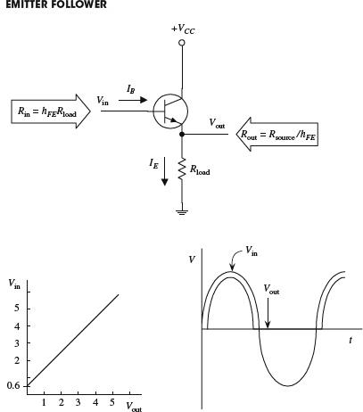
The network shown here is called an emitter follower. In this circuit, the output voltage (tapped at the emitter) is almost a mirror image of the input (output “follows” input), with the exception of a 0.6 V drop in the output relative to the input (caused by base-emitter pn junction). Also, whenever VB ≤ 0.6 V (during negative swings in input), the transistor will turn off (the pn junction is reversed-biased). This effect results in clipping of the output (see graph). At first glance, it may appear that the emitter follower is useless—it has no voltage gain. However, if you look at the circuit more closely, you will see that it has a much larger input impedance than an output impedance, or more precisely, it has a much larger output current (IE) relative to an input current (IB). In other words, the emitter follower has current gain, a feature that is just as important in applications as voltage gain. This means that this circuit requires less power from the signal source (applied to Vin) to drive a load than would otherwise be required if the load were to be powered directly by the source. By manipulating the transistor gain equation and using Ohm’s law, the input resistance and output resistance are:
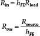
FIGURE 4.55
EMITTER-FOLLOWER (COMMON-COLLECTOR) AMPLIFIER
The circuit shown here is called a common-collector amplifier, which has current gain but no voltage gain. It makes use of the emitter-follower arrangement but is modified to avoid clipping during negative input swings. The voltage divider (R1 and R2) is used to give the input signal (after passing through the capacitor) a positive dc level or operating point (known as the quiescent point). Both the input and output capacitors are included so that an ac input-output signal can be added without disturbing the dc operating point. The capacitors, as you will see, also act as filtering elements.
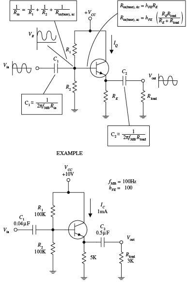
FIGURE 4.56
To design a common-collector amplifier used to power a 3-kΩ load, which has a supply voltage VCC = +10 V, a transistor hFE of 100, and a desired f3dB point of 100 Hz, you
1. Choose a quiescent current IQ = IC. For this problem, pick IQ = 1 mA.
2. Next, select VE = ½VCC to allow for the largest possible symmetric output swing without clipping, which in this case, is 5 V. To set VE = 5 V and still get IQ = 1 mA, make use of RE, whose value you find by applying Ohm’s law:
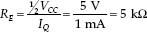
3. Next, set the VB = VEE + 0.6 V for quiescent conditions (to match up VEE so as to avoid clipping). To set the base voltage, use the voltage divider (R1 and R2). The ratio between R1 and R2 is determined by rearranging the voltage-divider relation and substituting into it VB = VEE + 0.6 V:
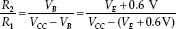
Fortunately, you can make an approximation and simply let R1 = R2. This approximation “forgets” the 0.6-V drop but usually isn’t too dramatic. The actual sizes of R2 and R1 should be such that their parallel resistance is less than or equal to one-tenth the dc (quiescent) input resistance at the base (this prevents the voltage divider’s output voltage from lowering under loading conditions):
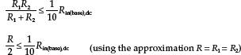
Here, Rin(base),dc = hFERE, or specially, Rin(base),dc = 100(5 k) = 500 k. Using the approximation above, R1 and R2 are calculated to be 100 k each. (Here you did not have to worry about the ac coupler load; it did not influence the voltage divider because you assumed quiescent setup conditions; C2 acts as an open circuit, hence “eliminating” the presence of the load.)
4. Next, choose the ac coupling capacitors so as to block out dc levels and other undesired frequencies. C1 forms a high-pass filter with Rin (see diagram). To find Rin, treat the voltage divider and Rin(base),ac as being in parallel:
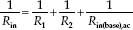
Notice that Rin(base),ac is used, not Rin(base),dc. This is so because you can no longer treat the load as being absent when fluctuating signals are applied to the input; the capacitor begins to pass a displacement current. This means that you must take RE and Rload in parallel and multiply by hFE to find Rin(base,ac):
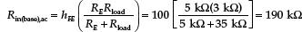
Now you can find Rin:
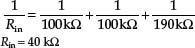
Once you have found Rin, choose C1 to set the f3dB point (C1 and Rin form a high-pass filter.) The f3dB point is found by using the following formula:
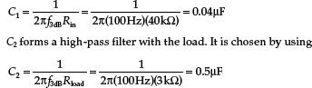
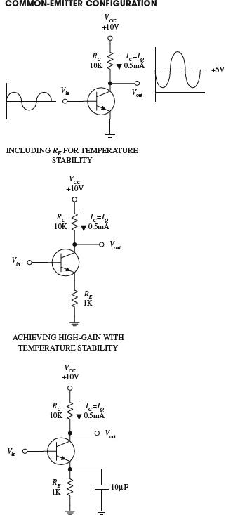
FIGURE 4.57
The transistor configuration here is referred to as the common-emitter configuration. Unlike the emitter follower, the common emitter has voltage gain. To figure out how this circuit works, first set VC = ½VCC to allow for maximum swing without clipping. Like the emitter follower, again pick a quiescent current IQ to start with. To set VC = ½VCC with a desired IQ, use RC, which is found by Ohm’s law:
For example, if VCC is 10 V and IQ is 0.5 mA, RC is then 10 k. The gain of this circuit is found by realizing that ΔVE = ΔVB (where Δ represents a small fluctuation). The emitter current is found using Ohm’s law:
Using VC = VCC − ICRC and the last expression, you get
Since VC is Vout and VB is Vin, the gain is
But what about RE? According to the circuit, there’s no emitter resistor. If you use the gain formula, it would appear that RE = 0 Ω, making the gain infinite. However, as mentioned earlier, bipolar transistors have a transresistance (small internal resistance) in the emitter region, which is approximated by using
Applying this formula to the example, taking IQ = 0.5 mA = IC ≈ IE, the RE term in the gain equation, or rtr equals 52 Ω. This means the gain is actually equal to
Notice that the gain is negative (output is inverted). This results in the fact that as Vin increases, IC increases, while VC (Vout) decreases (Ohm’s law). Now, there is one problem with this circuit. The rtr term happens to be very unstable, which in effect makes the gain unstable. The instability stems from rtr dependence on temperature. As the temperature rises, VE and IC increase, VBE decreases, but VB remains fixed. This means that the biasing-voltage range narrows, which in effect turns the transistor’s “valve” off. To eliminate this pinch, an emitter resistor is placed from emitter to ground (see second circuit). Treating RE and rtr as series resistors, the gain becomes
By adding RE, variations in the denominator are reduced, and therefore, the variations in gain are reduced as well. In practice, RE should be chosen to place VE around 1 V (for temperature stability and maximum swing in output). Using Ohm’s law (and applying it to the example), choose RE = VE/IE = VE/IQ = 1 V/l mA = 1 k. One drawback that arises when RE is added to the circuit is a reduction in gain. However, there is a trick you can use to eliminate this reduction in voltage gain and at the same time maintain the temperature stability. If you bypass RE with a capacitor (see third circuit), you can make RE “disappear” when high-frequency input signals are applied. (Recall that a capacitor behaves like an infinitely large resistor to dc signals but becomes less “resistive,” or reactive to ac signals.) In terms of the gain equation, the RE term goes to zero because the capacitor diverts current away from it toward ground. The only resistance left in the gain equation is rtr.
FIGURE 4.58
The circuit shown here is known as a common-emitter amplifier. Unlike the common-collector amplifier, the common-emitter amplifier provides voltage gain. This amplifier makes use of the common-emitter arrangement and is modified to allow for ac coupling. To understand how the amplifier works, let’s go through the following example.
To design a common-emitter amplifier with a voltage gain of −100, an f3dB point of 100 Hz, and a quiescent current IQ = 1 mA, where hFE = 100 and VCC = 20 V:
1. Choose RC to center Vout (or VC) to ½VCC to allow for maximum symmetrical swings in the output. In this example, this means VC should be set to 10 V. Using Ohm’s law, you find RC:
2. Next we select RE to set VE = 1 V for temperature stability. Using Ohm’s law, and taking IQ = IE = 1 mA, we get RE = VE/IE = 1 V/1 mA = 1 kΩ.
3. Now, choose R1 and R2 to set the voltage divider to establish the quiescent base voltage of VB = VE + 0.6 V, or 1.6 V. To find the proper ratio between R1 and R2, use the voltage divider (rearranged a bit):
This means R1 = 11.5R2. The size of these resistors is found using the similar procedure you used for the common-collector amplifier; their parallel resistance should be less than or equal to  Rin(base),dc.
Rin(base),dc.
After plugging R1 = 11.5R2 into this expression and using Rin(base),dc = hFERE, you find that R2 = 10 kΩ, which in turn means R1 = 115 kΩ (let’s say, 110 kΩ is close enough for R1).
4. Next, choose R3 for the desired gain, where
(The double line means to take RE and (rtr + R3) in parallel.) To find rtr, use rtr = 0.026 V/IE = 0.026 V/IC = 0.026 V/1 mA = 26 Ω. Now you can simplify the gain expression by assuming RE “disappears” when ac signals are applied. This means the gain can be simplified to
Solving this equation for R3, you get R3 = 74 Ω.
5. Next, choose C1 for filtering purposes such that C1 = ½πf3dBRin. Here, Rin is the combined parallel resistance of the voltage-divider resistors, and Rin(base),ac looking in from the left into the voltage divider:
Solving this equation, you get Rin = 5 k. This means
6. To choose C2, treat C2 and rtr + R3 as a high-pass filter (again, treat RE as being negligible during ac conditions). C2 is given by
The zener diode circuit here can be used to make a simple voltage regulator. However, in many applications, the simple regulator has problems; Vout isn’t adjustable to a precise value, and the zener diode provides only moderate protection against ripple voltages. Also, the simple zener diode regulator does not work particularly well when the load impedance varies. Accommodating large load variations requires a zener diode with a large power rating—which can be costly.
The second circuit in the figure, unlike the first circuit, does a better job of regulating; it provides regulation with load variations and provides high-current output and somewhat better stability. This circuit closely resembles the preceding circuit, except that the zener diode is connected to the base of an npn transistor and is used to regulate the collect-to-emitter current. The transistor is configured in the emitter-follower configuration. This means that the emitter will follow the base (except there is the 0.6-V drop). Using a zener diode to regulate the base voltage results in a regulated emitter voltage. According to the transistor rules, the current required by the base is only 1/hFE times the emitter-to-collector current. Therefore, a low-power zener diode can regulate the base voltage of of a transistor that can pass a considerable amount of current. The capacitor is added to reduce the noise from the zener diode and also forms an RC filter with the resistor that is used to reduce ripple voltages.
In some instances, the preceding zener diode circuit may not be able to supply enough base current. One way to fix this problem is to add a second transistor, as shown in the third circuit. The extra transistor (the one whose base is connected to the zener diode) acts to amplify current sent to the base of the upper transistor.
FIGURE 4.59
By attaching two transistors together as shown here, a larger current-handling, larger hFE equivalent transistor circuit is formed. The combination is referred to as a Darlington pair. The equivalent hFE for the pair is equal to the product of the individual transistor’s hFE values (hFE = hFE1hFE2). Darlington pairs are used for large current applications and as input stages for amplifiers, where big input impedances are required. Unlike single transistors, however, Darlington pairs have slower response times (it takes longer for the top transistor to turn the lower transistor on and off) and have twice the base-to-emitter voltage drop (1.2 V instead of 0.6 V) as compared with single transistors. Darlington pairs can be purchased in single packages.
FIGURE 4.60
This type of transistor is used to amplify low-level signals but also can be used as a switch. Typical hFE values range from 10 to 500, with maximum IC ratings from about 80 to 600 mA. They come in both npn and pnp forms. Maximum operating frequencies range from about 1 to 300 MHz.
These transistors are used primarily as switches but also can be used as amplifiers. Typical hFE values range from around 10 to 200, with maximum IC ratings from around 10 to 1000 mA. They come in both npn and pnp forms. Maximum switching rates range between 10 and 2000 MHz.
These transistors are used for small signals that run at high frequencies for high-speed switching applications. The base region is very thin, and the actual chip is very small. They are used in HF, VHF, UHF, CATV, and MATV amplifier and oscillator applications. They have a maximum frequency rating of around 2000 MHz and maximum IC currents from 10 to 600 mA. They come in both npn and pnp forms.
These transistors are used in high-power amplifiers and power supplies. The collector is connected to a metal base that acts as a heat sink. Typical power ratings range from around 10 to 300 W, with frequency ratings from about 1 to 100 MHz. Maximum IC values range between 1 to 100 A. They come in npn, pnp, and Darlington (npn or pnp) forms.
These are two transistors in one. They provide more stability at high current levels. The effective hFE for the device is much larger than that of a single transistor, hence allowing for a larger current gain. They come in npn (D-npn) and pnp (D-pnp) Darlington packages.
This transistor acts as a light-sensitive bipolar transistor (base is exposed to light). When light comes in contact with the base region, a base current results. Depending on the type of phototransistor, the light may act exclusively as a biasing agent (two-lead phototransistor) or may simply alter an already present base current (three-lead phototransistor). See Chap. 5 for more details.
This consists of a number of transistors combined into a single integrated package. For example, the transistor array shown here is made of three npn transistors and two pnp transistors.
FIGURE 4.61
Important Things to Know about Bipolar Transistors
The current gain of a transistor (hFE) is not a very good parameter to go by. It can vary from, say, 50 to 500 within same transistor group family and varies with changes in collector current, collector-to-emitter voltage, and temperature. Because hFE is some-what unpredictable, one should avoid building circuits that depend specifically on hFE values.
All transistors have maximum collector-current ratings (IC,max), maximum collector-to-base (BVCBO), collector-to-emitter (BVCEO), and emitter-to-base (VEBO) breakdown voltages, and maximum collector power dissipation (PD) ratings. If these ratings are exceeded, the transistor may get zapped. One method to safeguard against BVEB is to place a diode from the emitter to the base, as shown in Fig. 4.62a. The diode prevents emitter-to-base conduction whenever the emitter becomes more positive than the base (e.g., input at base swings negative while emitter is grounded). To avoid exceeding BVCBO, a diode placed in series with the collector (Fig. 4.62b) can be used to prevent collector-base conduction from occurring when the base voltage becomes excessively larger than the collector voltage. To prevent exceeding BVCEO, which may be an issue if the collector holds an inductive load, a diode placed in parallel with the load (see Fig. 4.62c) will go into conduction before a collector-voltage spike, created by the inductive load, reaches the breakdown voltage.
FIGURE 4.62
Pinouts for Bipolar Transistors
Bipolar transistors come in a variety of different package types. Some transistors come with plastic housings; others come with metal can-like housings. When attempting to isolate the leads that correspond to the base, emitter, and collector terminals, first check to see if the package that housed the transistor has a pinout diagram. If no pinout diagram is provided, a good cross-reference catalog (e.g., NTE Cross-Reference Catalog for Semiconductors) can be used. However, as is often the case, simple switching transistors that come in bulk cannot be “looked up”—they may not have a label. Also, these bulk suppliers often will throw together a bunch of transistors that all look alike but may have entirely different pinout designations and may include both pnp and npn polarities. If you anticipate using transistors often, it may be in your best interest to purchase a digital multimeter that comes with a transistor tester. These multimeters are relatively inexpensive and are easy to use. Such a meter comes with a number of breadboard-like slots. To test a transistor, the pins of the transistor are placed into the slots. By simply pressing a button, the multimeter then tests the transistor and displays whether the device is an npn or pnp transistor, provides you with the pinout designations (e.g., “ebc,” “cbe,” etc.), and will give you the transistor’s hFE.
Here, an npn transistor is used to control a relay. When the transistor’s base receives a control voltage/current, the transistor will turn on, allowing current to flow through the relay coil and causing the relay to switch states. The diode is used to eliminate voltage spikes created by the relay’s coil. The relay must be chosen according to the proper voltage rating, etc.
FIGURE 4.63
The differential amplifier shown here is a device that compares two separate input signals, takes the difference between them, and then amplifies this difference. To understand how the circuit works, treat both transistors as identical, and then notice that both transistors are set in the common-emitter configuration. Now, if you apply identical input signals to both V1 and V2, identical currents flow through each transistor. This means that (by using VC = VCC – ICRC) both transistors’ collector voltages are the same. Since the output terminals are simply the left and right transistors’ collector voltages, the output voltage (potential difference) is zero. Now, assume the signals applied to the inputs are different, say V1 is larger than V2. In this case, the current flow through the right transistor will be larger than the current flow through the left transistor. This means that right transistor’s VC will decrease relative to the left transistor’s VC. Because the transistors are set in the common-emitter configuration, the effect is amplified. The relationship between the input and output voltages is given by
Rearranging this expression, you find that the gain is equal to RC/rtr.
Understanding what resistor values to choose can be explained by examining the circuit shown here. First, choose RC to center VC to ½VCC, or 5 V, to maximize the dynamic range. At the same time, you must choose a quiescent current (when no signals are applied), say, IQ = IC = 50 μA. By Ohm’s law RC = 10 V – 5 V/50 μA = 100 k. RE is chosen to set the transistor’s emitters (point A) as close to 0 V as possible. RE is found by adding both the right and left branch’s 50 μA and taking the sum to be the current flow through it, which is 100 μA. Now, apply Ohm’s law: RE = 0 V – 10 V/100 μA = 100 kΩ. Next, find the transresistance: rtr ≈ 0.026 V/IE = 0.026 V/50 μA = 520 Ω. The gain then is equal to 100 kΩ/520 Ω = 192.
In terms of applications, differential amplifiers can be used to extract a signal that has become weak and which has picked up considerable noise during transmission through a cable (differential amplifier is placed at the receiving end). Unlike a filter circuit, which can only extract a signal from noise if the noise frequency and signal frequency are different, a differential amplifier does not require this condition. The only requirement is that the noise be common in both wires.
When dealing with differential amplifiers, the term common-mode rejection ratio (CMRR) is frequently used to describe the quality of the amplifier. A good differential amplifier has a high CMRR (theoretically infinite). CMRR is the ratio of the voltage that must be applied at the two inputs in parallel (V1 and V2) to the difference voltage (V1 – V2) for the output to have the same magnitude.
FIGURE 4.64
FIGURE 4.65
Recall that an npn emitter follower acts to clip the output during negative swings in the input (the transistor turns off when VB ≤ VE + 0.6 V). Likewise, a pnp follower will clip the output during positive input swings. But now, if you combine an npn and pnp transistor, as shown in the circuit shown here, you get what is called a push-pull follower, or complementary-symmetry amplifier, an amplifier that provides current gain and that is capable of conducting during both positive and negative input swings. For Vin = 0 V, both transistors are biased to cutoff (IB = 0). For Vin > 0 V, the upper transistor conducts and behaves like an emitter follower, while the lower transistor is cut off. For Vin < 0 V the lower transistor conducts, while the upper transistor is cut off. In addition to being useful as a dc amplifier, this circuit also conserves power because the operating point for both transistors is near IC = 0. However, at IC = 0, the characteristics of hFE and rtr are not very constant, so the circuit is not very linear for small signals or for near-zero crossing points of large signals (crossover distortion occurs).
Here, two matched pnp transistors can be used to make what is called a current mirror. In this circuit, the load current is a “mirror image” of the control current that is sunk out of the leftmost transistor’s collector. Since the same amount of biasing current leaves both transistors’ bases, it follows that both transistors’ collector-to-emitter currents should be the same. The control current can be set by, say, a resistor connected from the collector to a lower potential. Current mirrors can be made with npn transistors, too. However, you must flip this circuit upside down, replace the pnp transistors with npn transistors, reverse current directions, and swap the supply voltage with ground.
FIGURE 4.66
FIGURE 4.67
The circuit here is an expanded version of the previous circuit, which is used to supply a “mirror image” of control current to a number of different loads. (Again, you can design such a circuit with npn transistor, too, taking into consideration what was mentioned in the last example.) Note the addition of an extra transistor in the control side of the circuit. This transistor is included to help prevent one transistor that saturates (e.g., its load is removed) from stealing current from the common base line and hence reducing the other output currents.
BISTABLE MULTIVIBRATOR (1ST CIRCUIT)
A bistable multivibrator is a circuit that is designed to remain in either of two states indefinitely until a control signal is applied that causes it to change states. After the circuit switches states, another signal is required to switch it back to its previous state. To understand how this circuit works, initially assume that V1 = 0 V. This means that the transistor on the right has no base current and hence no collector current. Therefore, all the current that flows through R2 flows into the base of the left-hand transistor, driving it into saturation. In the saturation state, V1 = 0, as assumed initially. Now, because the circuit is symmetric, you can say it is equally stable with V2 = 0 and the right-hand transistor saturated. The bistable multivibrator can be made to switch from one state to another by simply grounding either V1 or V2 as needed. Bistable multivibrators can be used as memory devices or as frequency dividers, since alternate pulses restore the circuit to its initial state.
MONOSTABLE MULTIVIBRATOR (2D CIRCUIT) A monostable multivibrator is a circuit that is stable in only one state. It can be thrown into its unstable state by applying an external signal, but it will automatically return to its unstable state afterward. When V1 = 0 V, the circuit is in its stable state. However, if you momentarily ground V2, the capacitor suddenly behaves like a short circuit (a capacitor likes to pass current when the voltage across it changes suddenly) and causes the base current and hence the collector current of the left-hand transistor to go to zero. Then, all the current through R1 flows into the base of the right-hand transistor, holding it in its saturation state until the capacitor can recharge through R. This in turn causes the circuit to switch back to its initial state. This kind of circuit produces a square pulse of voltage at V1 with a duration determined by the RC time constant and which is independent of the duration and amplitude of the pulse that caused it to change states.
ASTABLE MULTIVIBRATOR (3D CIRCUIT) This circuit is not stable in either state and will spontaneously switch back and forth at a prescribed rate, even when no input signals are present. To understand how this circuit works, initially assume that V1 is grounded. This means that the base of the right-hand transistor also will be at ground, at least until C1 can charge up through R2 to a high enough voltage to cause the right-hand transistor to saturate. At this time, V2 then goes to zero, causing the base of the left-hand transistor to go to zero. V1 then rises to a positive value, at least until C2 can charge up through R4 to a high enough voltage to cause the left-hand transistor to saturate. The cycle repeats itself over and over again. The time spent in each state can be controlled by the RC networks in the base section (R3C1 and R4C2 time constants set the time duration). As you can see, an astable multivibrator is basically a simple oscillator with an adjustable wave pattern (time spent in each state).
FIGURE 4.68
FIGURE 4.69 The two circuits here form logic gates. The OR circuit allows the output (C) to swing to a high voltage when either A or B or both A and B are high. In other words, as long as at least one of the transistors is biased (turned on), a high voltage will appear at the output. In the AND gate circuit, both A and B must be high in order for C to go high. In other words, both transistors must be biased (turned on) for a high voltage to appear at the output.
4.3.3 Junction Field-Effect Transistors
Junction field-effect transistors (JFETs) are three-lead semiconductive devices that are used as electrically controlled switches, amplifier controls, and voltage-controlled resistors. Unlike bipolar transistors, JFETs are exclusively voltage-controlled—they do not require a biasing current. Another unique trait of a JFET is that it is normally on when there is no voltage difference between its gate and source leads. However, if a voltage difference forms between these leads, the JFET becomes more resistive to current flow (less current will flow through the drain-source leads). For this reason, JFETs are referred to as depletion devices, unlike bipolar transistors, which are en-hancement devices (bipolar transistors become less resistive when a current/voltage is applied to their base leads).
JFETs come in either n-channel or p-channel configurations. With an n-channel JFET, a negative voltage applied to its gate (relative to its source lead) reduces current flow from its drain to source lead. (It operates with VC > VS.) With a p-channel JFET, a positive voltage applied to its gate reduces current flow from its source to drain lead. (It operates with VS > VC.) The symbols for both types of JFETs are shown below.
FIGURE 4.70
An important characteristic of a JFET that is useful in terms of applications is its extremely large input impedance (typically around 1010 Ω). This high input impedance means that the JFET draws little or no input current (lower pA range) and there-fore has little or no effect on external components or circuits connected to its gate—no current is drawn away from the control circuit, and no unwanted current enters the control circuit. The ability for a JFET to control current flow while maintaining an extremely high input impedance makes it a useful device used in the construction of bidirectional analog switching circuits, input stages for amplifiers, simple two-terminal current sources, amplifier circuits, oscillators circuits, electronic gain-control logic switches, audio mixing circuits, etc.
How a JFET Works
An n-channel JFET is made with an n-type silicon channel that contains two p-type silicon “bumps” placed on either side. The gate lead is connected to the p-type bumps, while the drain and source leads are connected to either end of the n-type channel (see Fig. 4.71).
FIGURE 4.71
When no voltage is applied to the gate of an n-channel JFET, current flows freely through the central n-channel—electrons have no problem going through an n-channel; there are a lot of negative charger carriers already in there just waiting to help out with conduction. However, if the gate is set to a negative voltage—relative to the source—the area in between the p-type semiconductor bumps and the center of the n-channel will form two reverse-biased junctions (one about the upper bump, another about the lower bump). This reverse-biased condition forms a depletion region that extends into the channel. The more negative the gate voltage, the larger is the depletion region, and hence the harder it is for electrons to make it through the channel. For a p-channel JFET, everything is reversed, meaning you replace the negative gate voltage with a positive voltage, replace the n-channel with a p-channel semiconductor, replace the p-type semiconductor bumps with n-type semiconductors, and replace negative charge carriers (electrons) with positive charge carriers (holes).
JFET Water Analogies
Here are water analogies for an n-channel and p-channel JFET. Pretend water flow is conventional current flow and water pressure is voltage.
When no pressure exists between the gate and source of the n-channel water JFET, the device is fully on; water can flow from the drain pipe to the source pipe. To account for a real JFET’s high input impedance, the JFET water analogy uses a plunger mechanism attached to a moving flood gate. (The plunger prevents current from entering the drain source channel, while at the same time it allows a pressure to control the flood gate.) When the gate of the n-channel JFET is made more negative in pressure relative to the source tube, the plunger is forced to the left. This in turn pulls the accordion-like flood gate across the drain-source channel, thus decreasing the current flow.
The p-channel water JFET is similar to the n-channel water JFET, except that all currents and pressures are reversed. The p-channel JFET is fully on until a positive pressure, relative to the source, is applied to the gate tube. The positive pressure forces the accordion across the drain-source channel, hence reducing the current flow.
FIGURE 4.72
Technical Stuff
The following graph describes how a typical n-channel JFET works. In particular, the graph describes how the drain current (ID) is influenced by the gate-to-source voltage (VGS) and the drain-to-source voltage (VDS). The graph for a p-channel JFET is similar to that of the n-channel graph, except that ID decreases with an increasing positive VGS. In other words, VGS is positive in voltage, and VDS is negative in voltage.
FIGURE 4.73
When the gate voltage VG is set to the same voltage as the source (VGS = VG – VS = 0 V), maximum current flows through the JFET. Technically speaking, people call this current (when VGS = 0 V) the drain current for zero bias, or IDSS. IDSS is a constant and varies from JFET to JFET. Now notice how the ID current depends on the drain-source voltage (VDS = VD – VS). When VDS is small, the drain current ID varies nearly linearly with VDS (looking at a particular curve for fixed VGS). The region of the graph in which this occurs is called the ohmic region, or linear region. In this region, the JFET behaves like a voltage-controlled resistor.
Now notice the section of the graph were the curves flatten out. This region is called the active region, and here the drain current ID is strongly influenced by the gate-source voltage VGS but hardly at all influenced by the drain-to-source voltage VDS (you have to move up and down between curves to see it).
Another thing to note is the value of VGS that causes the JFET to turn off (point where practically no current flows through device). The particular VGS voltage that causes the JFET to turn off is called the cutoff voltage (sometimes called the pinch-off voltage VP), and it is expressed as VGS,off.
Moving on with the graph analysis, you can see that when VDS increases, there is a point where ID skyrockets. At this point, the JFET loses its ability to resist current because too much voltage is applied across its drain-source terminals. In JFET lingo, this effect is referred to as drain-source breakdown, and the breakdown voltage is expressed as BVDS.
For a typical JFET, IDSS values range from about 1 mA to 1 A, VGS,off values range from around −0.5 to −10 V for an n-channel JFET (or from +0.5 to +10 V for a p-channel JFET), and BVDS values range from about 6 to 50 V.
Like bipolar transistors, JFETs have internal resistance within their channels that varies with drain current and temperature. The reciprocal of this resistance is referred to as the transconductance gm. A typical JFET transconductance is around a few thousand Ω-1, where Ω-1 = 1/Ω or .
Another one of the JFET’s built-in parameters is its on resistance, or RDS,on. This resistance represents the internal resistance of a JFET when in its fully conducting state (when VGS = 0). The RDS,on of a JFET is provided in the specification tables and typically ranges from 10 to 1000 Ω.
OHMIC REGION JFET is just beginning to resist. It acts like a variable resistor.
SATURATION REGION JFET is most strongly influenced by gate-source voltage, hardly at all influenced by the drain-source voltage.
CUTOFF VOLTAGE (VGS,OFF) Particular gate-source voltage where JFET acts like an open circuit (channel resistance is at its maximum).
BREAKDOWN VOLTAGE (BVDS) The voltage across the drain and source that caused current to “break through” the JFET’s resistive channel.
DRAIN-CURRENT FOR ZERO BIAS (IDSS) Represents the drain current when gate-source voltage is zero volts (or gate is connected to source, VGS = 0 V).
TRANSCONDUCTANCE (gm) Represents the rate of change in the drain current with the gate-source voltage when the drain-to-source voltage is fixed for a particular VDS. It is analogous to the transconductance (1/Rtr) for bipolar transistors.
FIGURE 4.74
If an n-channel JFET has a IDSS = 8 mA and VGS,off = −4 V, what will be the drain current ID if R = 1 kΩ and VDD = +18 V? Assume that the JFET is in the active region.
In the active region, the drain current is given by
Unfortunately, there is one equation and two unknowns. This means that you have to come up with another equation. Here’s how you get the other equation. First, you can assume the gate voltage is 0 V because it’s ground. This means that VGS = VG − VS = 0 V − VS = −VS
From this, you can come up with another equation for the drain current by using Ohm’s law and treating ID = IS:
This equation is then combined with the first equation to yield
which simplifies to
VGS2 + 10VGS + 16 = 0
The solutions to this equation are VGS = −2 V and VGS = − 8 V. But to be in the active region, VGS must be between −4 and 0 V. This means that VGS = −2 V is the correct solution, so you disregard the − 8-V solution. Now you substitute VGS back into one of the ID(active) equations to get
FIGURE 4.75
If VGS,off = −4 V and IDSS = 12 mA, find the values of ID and gm and RDS when VGS = −2 V and when VGS = +1 V. Assume that the JFET is in the active region.
When VGS = −2 V,
To find gm, you first must find gm0 (transconductance for shorted gate):
Now you can find gm: